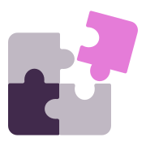
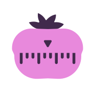
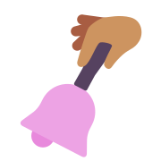
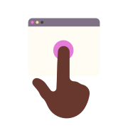

Embed the timer straight into the interface of your chosen web
tool
Track time within the app itself – the available metadata will be
automatically added to the time entries.

Improve your productivity with the Pomodoro timer
Set up the Pomodoro timer and we can nudge you to take your needed
breaks at preset time intervals.

Build your time tracking habit with the help of tracking reminders
Set time tracking reminders for specific times or days – one less
thing to think about.

Use idle detection to stop the timer when you’re not using your
computer
When you’re inactive, Toggl Track will let you know. You can
choose what to do with the time away when you’re back.